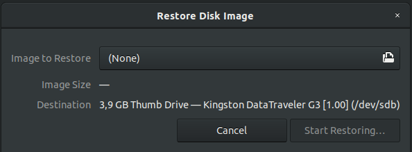
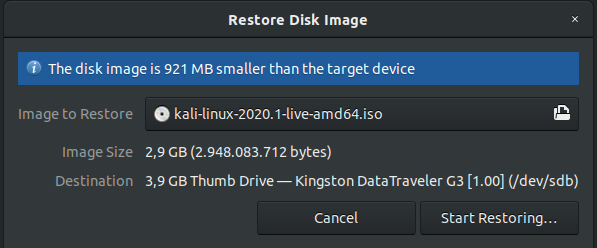
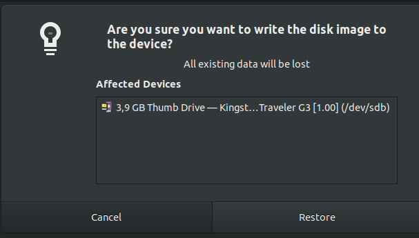

Preparativos previos a la instalación¶
Creación de USB Booteable¶
Windows¶
Linux¶
Interfaz gráfica (GUI)¶
En este caso usare la herramienta Disks que viene instalado por defecto en Ubuntu.
Como se observa en la imagen, basta con buscarlo directamente con el nombre Disks o Discos.

Una vez abierta la herramienta.
Considerar
Que el Disco Duro(HDD) también es una unidad de almacenamiento por lo tanto estará listado. Cuidado con escoger el disco duro para crear el Booteable.
-
Se procederá a escoger la unidad de Almacenamiento para crear el USB Booteable.

-
Luego en el menú ubicado en el lado derecho superior, como se observa en la imagen siguiente, y se le dará a la opción
Restore Disk Image.
-
Aparecerá una ventana
Restore Disk Image, que nos permitirá escoger la imagenisoque necesitamos al dar clic enImage to Restorepara el Booteable.  -
Después de seleccionar la imagen
isopuede aparecer una alerta. Esto se debe a que el tamaño de la imagenisoes muy pequeña comparado con la capacidad de almacenamiento del USB, es decir te sobra espacio de almacenamiento en el USB. Por lo que se puede continuar con el proceso dandole clic enStart Restoring....  -
Antes de comenzar la restauración, te aparecerá una ventana para corroborar la unidad escogida. Dar clic en
Restorepara comenzar el proceso.  -
Comenzará el proceso de generar el USB Booteable como se muestra en la siguiente imagen. El proceso puede tardar algunos minutos

Comando de Linea (CLI)¶
Como no siempre se tiene interfaz gráfica, aquí explicaré el uso del comando DD o Copia en Duro para la creación de un USB boot.
Debemos encontrar el FileSystem donde se encuentra montado nuestro USB para ello usaremos el comando df, que nos listará todas las particiones que tiene montado el sistema operativo.
1 | |
Resultado
1 2 3 4 5 6 7 8 9 10 11 12 13 14 15 16 17 18 19 20 21 22 23 24 25 | |
Nos interesa saber la información de la columna FileSystem (linea número 25 resaltada) donde usualmente la ruta de directorio montaje de un USB sigue el patrón /media/nombreUsuario/nombreUSB.
Del resultado mostrado, nuestro USB se encuentra en el FileSystem /dev/sdb. Esa información será nuestro destino para el uso del comando dd
1 | |
1 | |
1 | |